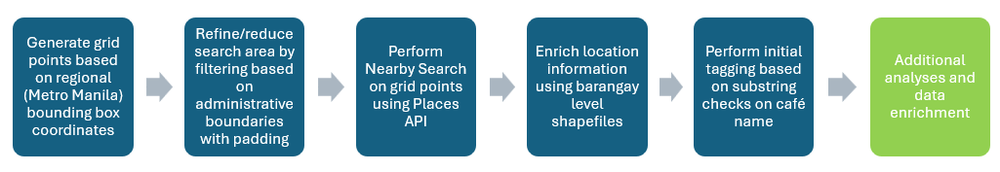
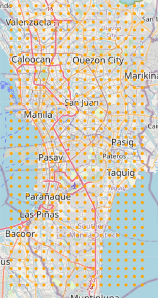
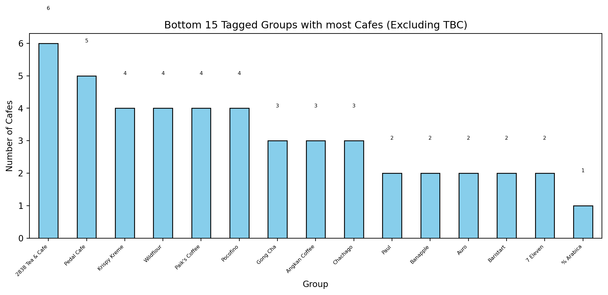

import requests
import time
import csv
import math
from datetime import datetime
import pandas as pd
import geopandas as gpd
from shapely.geometry import Point
import shutil
import osIn this post, I start building a database of cafes in Metro Manila (Philippines) primarily using Python and Google’s Places API. The intent is to use such a database for performing market analysis in the region, which should be useful for existing and new cafe businesses. The resulting workflow and code should also be applicable to other industries or locations, as long as they can be targeted by changin the parameters used in the code.
Summary
We are able to build an initial database of 6150 cafes in Metro Manila using a straightforward workflow given in the diagram below:

Aside from extracting a list of cafes using Google’s Places API, we also add features like additional location information and tag cafes under identified chains. Further data processing and analysis will be done, which will be shared in future posts.
Note: This post will only include relevant snippets of code for readability.
Objectives
We aim to build a database of cafes in Metro Manila that can be used for market analysis for players in the industry. The resulting database and/or the code should observe the following:
The database should give a comprehensive list of cafes in the region using Google Maps data
The database should give relevant information on the listed cafes that will allow for further analyses
The database should be set up to allow for future updates and monitoring of changes over time
Where possible, the code should be efficient and reduce the costs incurred, specifically in the number of calls it makes using the API
The Places API
Our main source to generate a list of cafes is Google Maps, using data that we will be accessing using Google’s Places API.
The Places API lets us access location information in Google Maps using http requests. The request will access a specific service depending on the endpoint / url. For this post, we will be using the Nearby Search service which is uses the following endpoint: https://places.googleapis.com/v1/places:searchNearby
It is worth noting that the API is not free and is tied to a Google Cloud account. For the specific calls made in this post, there is a cost for exceeding 1,000 API calls: $35 per 1,000 calls. (up to 100K calls) It is therefore imperative that the API key is kept secure and that the code does not make any unnecessary calls, as this cost does add up fast.
Loading Packages
The current code currently makes use of the following eight packages:
requests - This library is the standard for making simple http requests
csv - This is for reading and writing CSV files which will be the format used to store our results
math - This library gives access to common math functions and constants We will mainly use this to perform calculations to split Metro Manila into grid squares for the grid-based search.
pandas - For handling dataframe data structures in Python. We use this mainly to analyze the data after.
geopandas - This library lets us work with geospatial data in Python
shapely - This library is used for the manipulation and analysis of planar objects
shutil - This library provides functions for operating on files. We use this mainly to produce backup copies of files that we have just updated
os - Provides OS functionality. We will use this mainly to identify the filename and generate a backup filename to use in conjunction with the previous package.
Note that these packages are specific to the functions required to run the workflow. Functions purely for analysis and visualization (e.g., matplotlib) have not been included in this section.
Step 1: Generating Initial Gridpoints
A Nearby Search using the Places API lets the user perform a search by specifying an area and then specifying the type(s) of places to return. For defining the search area, we will be defining the coordinates for the center, and then also the search radius to use. At the time of writing, it looks like each search / API call will only return a maximum of 20 results. This means that we need to try to define search areas that are small enough to ensure that a single query returns all cafes in the area.
In order to do this, we define the total area we want to perform the search on, Metro Manila, and then find a bounding box for that area– in particular, the corners of the bounding box. A web search gave us the following coordinates:
# Upper left and lower right corners of bounding box
NW_LAT, NW_LNG = 14.7100, 120.9500
SE_LAT, SE_LNG = 14.4000, 121.1000With the bounding box defined, we then need to split it into smaller areas to perform the search on. For now, we will use a distance of 1km vertically or horizontally between the center of adjacent search areas. This will split the total area into grid points or grid squares.
We also need to define a radius for the search. The radius of the search needs to cover the diagonal of each grid square, and not only the radius. The diagonal measures \(\sqrt{2}/2\) , which we can round up to 710m.
GRID_STEP_KM = 1 # Grid square side
SEARCH_RADIUS_M = GRID_STEP_KM * 710 # Search radius in metersThe function to generate the initial grid points then needs to move from one corner of the bounding box, in this case, the top left corner, to the opposite corner. The code below moves from left to right before moving to the next “row”. The function uses an estimate of 111 km for every degree of latitude in order to move across the bounding box.
def generate_grid_points(nw_lat, nw_lng, se_lat, se_lng, step_km):
points = []
lat_step = step_km / 111.0 # approx degrees per km
lng_step = step_km / (111.0 * math.cos(math.radians(nw_lat)))
lat = nw_lat
while lat > se_lat:
lng = nw_lng
while lng < se_lng:
points.append((lat, lng))
lng += lng_step
lat -= lat_step
return pointsRunning the function above with the bounding box coordinates and a 1km spacing gives us the following grid points.

The function generated 595 grid points. While this appears okay, since we are still within our free cap, we expect to make multiple runs in a month as we test or add on layers. Two runs will already incur us costs. We also see that a large number of these points fall on water, which means the API call is wasted in such cases. We need to remove these points to make sure we reduce the number of calls that do not generate any results.
Step 2: Filtering Grid Points (Reduce points falling on water)
One way to address the issue just mentioned is by filtering the points based on a reference geospatial dataset. For our case, we can choose to filter the points to only the ones that fall within the administrative (land) region of Metro Manila. This data is accessible online using sources like Human Data Exchange. We would need a layer from ADM1 or higher to make sure that we can filter at the regional level.
The filtering will be using the functions from the geopandas package in order to work with geospatial data and performing geospatial operations. The following code block gives the initial version of the filtering function by performing the following steps:
- Loads the shapefile into a geopandas dataframe and then filters for only the Metro Manila region. The resulting dataframe is called
metro_manila - Converts the initial list of gridpoints
gpfrom the current coordinates into a geo dataframe using the same reference system as the shapefile. This transformsgpintopoints_gdf - Combines metro_manila into a single shape using
union_all, and then useswithinto check which points inpoints_gdffall withinunion_all. These points are the ones returned by the function.
def mm_filter(gp):
# Loading the shapefile
shapefile_path = "ADM_1_shapefile_path"
gdf = gpd.read_file(shapefile_path)
# Filter for Metro Manila (ADM1_PCODE = "PH13")
metro_manila = gdf[gdf["ADM1_PCODE"] == "PH13"]
# ---------------- CONVERT GRID POINTS TO GeoDataFrame ----------------
points_gdf = gpd.GeoDataFrame(
pd.DataFrame(gp, columns=["lat", "lng"]),
geometry=[Point(lng, lat) for lat, lng in gp],
crs="EPSG:4326"
)
metro_union = metro_manila.geometry.union_all()
filtered_points = points_gdf[points_gdf.within(metro_union)]
filtered_list = [(point.y, point.x) for point in filtered_points.geometry]
return filtered_listRunning the initial points in this function generates the points below.

We see that there are now no points falling on the large bodies of water. The code actually reduced the number of points from 595 to 440, a 26% reduction.
If we look closely at this new map, we see some issues though. There are areas close to water which appear to be missing a grid point. A few red boxes have been placed to highlight such places. It looks like the grid points that should be covering some part of these areas fall right on the water and were therefore excluded.
A slight modification to the function is therefore introduced to make sure we still allow gridpoints that fall close to the border. We then modify the original function with the following to achieve this:
- Convert the Metro Manila data frame into a meters-based system using
to_crs(epsg=3857)(make sure to check EPSG codes if using these functions for other countries) - Introduce a 1km buffer around the combined Metro Manila area using
buffer(1000) - Reproject the area back to EPSG 4326, then follow the same steps for checking the input list
gpand returning the filtered points.
def mm_filter_v2(gp):
shapefile_path = "ADM_1_shapefile_path"
gdf = gpd.read_file(shapefile_path)
metro_manila = gdf[gdf["ADM1_PCODE"] == "PH13"]
points_gdf = gpd.GeoDataFrame(
pd.DataFrame(gp, columns=["lat", "lng"]),
geometry=[Point(lng, lat) for lat, lng in gp],
crs="EPSG:4326"
)
# Introduce a buffer of 1km around Metro Manila
# Reproject to a CRS in meters
metro_manila_proj = metro_manila.to_crs(epsg=3857)
metro_union_buffered = metro_manila_proj.geometry.union_all().buffer(1000)
# Reproject back to WGS84 for comparison
metro_union = gpd.GeoSeries([metro_union_buffered], crs="EPSG:3857").to_crs(epsg=4326).iloc[0]
filtered_points = points_gdf[points_gdf.within(metro_union)]
filtered_list = [(point.y, point.x) for point in filtered_points.geometry]
return filtered_listRunning the function increases the number of points filtered from 440 to 504, but ensures that we still search all areas that lie close to the water.
Step 3: Performing the Nearby Search
The Nearby Search is done by making a call using the requests package. The request parameters will include the endpoint, and the details for the request which will be passed on in JSON format as the headers and json parameters below.
# Incomplete function, for illustration only
def fetch_places(center_lat, center_lng, radius, included_types):
# Endpoint for Nearby Search
BASE_URL = "https://places.googleapis.com/v1/places:searchNearby"
headers = "define headers value here"
body = "define json value here"
# API call made via:
response = requests.post(BASE_URL, headers=headers, json=body)
if response.status_code != 200:
print(f"Error: {response.status_code}, {response.text}")
return []
data = response.json()
return data.get("places", [])The headers parameter is where we will include our API key, and the list of fields to return, or the field mask. While the field mask can accept the wildcard "*", it is not advisable since the Nearby Search covers multiple Nearby Search SKUs based on the “most expensive” field requested. The wildcard will trigger pricing for the most expensive SKU (Nearby Search Enterprise + Atmosphere), which we currently do not need.
# Enumerate fields to request
fields_to_include = [
"places.id",
"places.displayName",
"places.formattedAddress",
"places.location",
"places.types",
"places.businessStatus",
"places.rating",
"places.userRatingCount",
"places.websiteUri",
"places.nationalPhoneNumber"]
fields = ",".join(fields_to_include)
headers = {
"Content-Type": "application/json",
"X-Goog-Api-Key": "API_KEY_here",
"X-Goog-FieldMask": fields
}The json parameter, which we will pass on the value of body, is where we define the specific Nearby Search parameters. This includes the search area, the type of places to include, and the number of results to return. (up to a maximum of 20) The rankPreference can also be defined, and we use “DISTANCE” to make sure that results are sorted and picked up based on the proximity to the center. The default mode is “POPULARITY” which might mean that big chains that fall on the overlap of search areas have a high chance of being repeated, and displace some of the less popular cafes.
included_types = ["cafe", "coffee_shop"]
body = {
"locationRestriction": {
"circle": {
"center": {"latitude": "replace_with_gp_lat",
"longitude": "replace_with_gp_lng"},
"radius": SEARCH_RADIUS_M
}
},
"rankPreference": "DISTANCE",
"includedTypes": included_types,
"maxResultCount": 20,}With all the Nearby Search parameters defined, we can then run the resulting function using each of the gridpoints generated in the previous step as centers for the search areas.
The initial run of our script so far produced a dataset of 6150 cafes in Metro Manila which is stored in a csv file.

Step 4: Adding barangay and city information
We use the pandas package to load the data into a dataframe in order to examine the current output.
import pandas as pd
df = pd.read_csv('.\data\metro_manila_cafes.csv')
df.head()| place_id | name | address | lat | lng | types | business_status | rating | user_ratings_total | website | phone_number | data_extracted | |
|---|---|---|---|---|---|---|---|---|---|---|---|---|
| 0 | ChIJoaqhLu-zlzMRCw_dDwh7HWo | Lazy Latte Cafe | 62, HP Building, G. Lazaro Rd, Valenzuela, 144... | 14.707911 | 120.955799 | coffee_shop,food_store,cafe,food,point_of_inte... | OPERATIONAL | 5.0 | 8.0 | https://www.facebook.com/profile.php?id=615654... | 0964 968 4439 | 2025-12-02 |
| 1 | ChIJGxMZJACzlzMRvayy0yTM6tM | NG SNACK CAFE | Pascual Deato, Manila, Metro Manila, Philippines | 14.713137 | 120.950482 | coffee_shop,food_store,cafe,food,point_of_inte... | OPERATIONAL | 5.0 | 2.0 | NaN | 0920 529 2943 | 2025-12-02 |
| 2 | ChIJ-awZBgCzlzMR4wgLf3nVNsQ | But First, Coffee (BFC) - Polo Valenzuela | 30 Poblacion, 1 Marcelo H. Del Pilar St, Valen... | 14.708518 | 120.946553 | coffee_shop,food_store,cafe,food,point_of_inte... | OPERATIONAL | 5.0 | 3.0 | NaN | NaN | 2025-12-02 |
| 3 | ChIJ33aDSACzlzMRcrhmFyhrFiQ | R2RO’s Café | 289 Marcelo H. Del Pilar St, Valenzuela, 1444 ... | 14.715195 | 120.952188 | coffee_shop,food_store,cafe,food,point_of_inte... | OPERATIONAL | 5.0 | 2.0 | https://www.facebook.com/share/1CyJcChxx4/?mib... | NaN | 2025-12-02 |
| 4 | ChIJC5UvVgGzlzMRh7_27ZBa0hs | Kubo ni lola | 321 Pasolo Rd, Brgy. Pasolo, Valenzuela, 1444 ... | 14.708686 | 120.952378 | coffee_shop,food_store,cafe,food,point_of_inte... | OPERATIONAL | 5.0 | 3.0 | NaN | 0968 507 1296 | 2025-12-02 |
df.columnsIndex(['place_id', 'name', 'address', 'lat', 'lng', 'types', 'business_status',
'rating', 'user_ratings_total', 'website', 'phone_number',
'data_extracted'],
dtype='object')The output contains 12 columns that describe each cafe returned by the Nearby search. We want to examine the location information, since a large part of the analysis we will be performing will be location-based as we analyze cafes in a given area. It looks like that aside from the coordinates, (lat, lng) we have the location information in the address column. We can check out the first few elements using the code chunk below.
for i in range(5): print(df['address'][i])62, HP Building, G. Lazaro Rd, Valenzuela, 1443 Metro Manila, Philippines
Pascual Deato, Manila, Metro Manila, Philippines
30 Poblacion, 1 Marcelo H. Del Pilar St, Valenzuela, 1444 Metro Manila, Philippines
289 Marcelo H. Del Pilar St, Valenzuela, 1444 Metro Manila, Philippines
321 Pasolo Rd, Brgy. Pasolo, Valenzuela, 1444 Metro Manila, PhilippinesWith just the first five elements, while it looks like we can derive the city for each of them, we see that the cannot identify which barangay each cafe belongs to. The fifth and maybe the second item have the barangay before the city name, but the rest clearly do not. They only show the street name before the city.
An approach we can take to tag barangay and city information will be through the use of shapefiles, similar to what we did in Step 2. Instead of filtering, we would be using geopandas to find where each cafe is.
We perform this while creating a “master file”. Creating a masterfile, is done since we only need to have one record for each cafe. The file generated previously includes a “data_extracted” column to track any changes in the cafe details overtime– especially cafe closures, additions, ratings.
The function below performs the following:
- Loads the file with the cafe dataset and, if it exists, the existing masterfile
- Finds cafes that are not in the masterfile that need to be tagged and added to the masterfile
- Converts the cafes into a geopandas dataframe
cafes_gdfand loads the ADM4 shapefile into another geodataframeadmin_gdf - Merges
cafes_gdfandadmin_gdfusing a spatial joinsjoin. - Writes the relevant columns into the masterfile. Additional columns for future steps:
Group, andIncludeare also added to the file with default values
def create_master(input_file='.\data\metro_manila_cafes.csv', master_file='.\data\metro_manila_cafes_master.csv'):
# Load ADM4 Shapefile
shapefile_path = "shapefile_path_up_to_ADM4"
# Load inputs data
cafes_df = pd.read_csv(input_file)
# If master file exists, load it and filter new cafes
if os.path.exists(master_file):
master_df = pd.read_csv(master_file)
existing_ids = set(master_df["place_id"])
cafes_df = cafes_df[~cafes_df["place_id"].isin(existing_ids)]
print(f"Master file exists. Found {len(cafes_df)} new cafes to process.")
else:
master_df = pd.DataFrame(columns=[
"place_id", "name", "address", "lat", "lng", "data_extracted",
"ADM2_EN", "ADM3_EN", "ADM4_EN", "Group", "Include"
])
print(f"No master file found. Processing all {len(cafes_df)} cafes.")
# If no new cafes, exit early
if cafes_df.empty:
print("No new cafes to process. Exiting.")
else:
# ---------------- CONVERT TO GeoDataFrame ----------------
cafes_gdf = gpd.GeoDataFrame(
cafes_df,
geometry=[Point(xy) for xy in zip(cafes_df.lng, cafes_df.lat)],
crs="EPSG:4326"
)
# ---------------- LOAD SHAPEFILE ----------------
admin_gdf = gpd.read_file(shapefile_path)
enriched_gdf = gpd.sjoin(cafes_gdf, admin_gdf, how="left", predicate="within")
# Retain required columns
enriched_df = enriched_gdf[[
"place_id", "name", "address", "lat", "lng", "data_extracted", "ADM2_EN", "ADM3_EN", "ADM4_EN"
]].copy()
# Add default columns
enriched_df["Group"] = "New Record"
enriched_df["Include"] = "Yes"
# Append to master
master_df = pd.concat([master_df, enriched_df], ignore_index=True)
# Save updated master file
master_df.to_csv(master_file, index=False, encoding="utf-8")
print(f"Updated master file saved with {len(master_df)} total cafes.")
print("Preview of last 5 rows added:")
print(enriched_df.tail())Once the code runs, we can use the following code to run a quick query on the top 5 cities and barnagays with the most cafes.
df = pd.read_csv('.\data\metro_manila_cafes_master.csv')
print("Top 5 Cities in Metro Manila with the most cafes")
df["ADM3_EN"].value_counts().head()
print("\nTop 5 Barangays in Metro Manila with the most cafes")
df[["ADM4_EN","ADM3_EN"]].value_counts().head()Top 5 Cities in Metro Manila with the most cafes
Top 5 Barangays in Metro Manila with the most cafesADM4_EN ADM3_EN
B. F. Homes City of Parañaque 95
Talon Dos City of Las Piñas 75
Don Bosco City of Parañaque 74
Batasan Hills Quezon City 71
Pasong Tamo Quezon City 65
Name: count, dtype: int64Step 5: Tagging Cafe chains based on names
The last data processing step we will cover in this post is the addition of tags to identify cafes that belong to the same name or chain. We created a column Group in the masterfile to capture this information, but assigned a default value of “TBC” for now.
We will do initial tagging based on an inspection of the cafe names. This is by checking the presence of specific substrings in the name, and then using a dictionary of group and substrings to mark cafes. While this can be done manually, we can use some code to help us identify candidate substrings and cafe chains.
The idea will be to go through the cafe names and check which sequences of words appear commonly in the field– this should point to potential cafe chains. We limit the length of the sequence to 2-4 words. Single words might not be very useful since we expect a lot of noise with words like coffee, cafe, tea, etc., as well as articles to pop up in the results. We also limit to 4 words since we don’t expect brand or chain names to be any longer, most of them should be evident with even less.
The code below does this by tokenizing the words and creating 2-, 3- and 4-grams, The Counter class from the collections package is used to count each n-gram as the code encounters them as it runs through the list of names. The code also includes displaying the top 20 n-grams.
import pandas as pd
from collections import Counter
import re
# df already is loaded with the masterfile
names = df['name'].dropna().tolist()
def get_ngrams(text, n):
words = re.findall(r'\w+', text.lower()) # tokenize words
return zip(*[words[i:] for i in range(n)]) # create n-grams
# Collect all n-grams
ngrams_counter = Counter()
for name in names:
for n in [2, 3, 4]:
ngrams_counter.update([' '.join(ngram) for ngram in get_ngrams(name, n)])
# Convert to DataFrame
ngrams_df = pd.DataFrame(ngrams_counter.items(), columns=['ngram', 'count']).sort_values(by='count', ascending=False)
ngrams_df.head(20)| ngram | count | |
|---|---|---|
| 1973 | pickup coffee | 110 |
| 556 | s cafe | 88 |
| 212 | milk tea | 80 |
| 590 | s coffee | 65 |
| 1379 | zus coffee | 63 |
| 631 | the coffee | 61 |
| 591 | coffee shop | 58 |
| 5330 | coffee bean | 46 |
| 8 | coffee bfc | 46 |
| 15 | but first coffee bfc | 46 |
| 7 | first coffee | 46 |
| 6 | but first | 46 |
| 11 | but first coffee | 46 |
| 12 | first coffee bfc | 46 |
| 5332 | tea leaf | 44 |
| 19791 | las piñas | 43 |
| 529 | quezon city | 42 |
| 300 | coffee tea | 39 |
| 5336 | the coffee bean | 39 |
| 86 | kkopi tea | 39 |
Based on the top 20 n-grams, we are able to spot a few chain names like: Pickup Coffee, Zus Coffee, But First, Coffee, Coffee Bean and Tea Leaf, Kkopi Tea. The longer list should be examined to find other recurring n-grams. It is also worth noting that this will not surface any chain names with only one words– like Starbucks. While the user can rerun the code for only single words, if they want to have the code help them identify these.
The identified brands/chains and their keywords can be defined in a function like the one below which can be used to check a cafe name and return the chain name if there is a match in the dictionary, or return “TBC” otherwise.
# Complete dictionary not included
def assign_group(name):
brand_dict = {
"B1T1 Takeaway Coffee": ["b1t1"],
"Big Brew": ["big brew", "bigbrew"],
"Black Scoop Cafe": ["black scoop", "blackscoop"],
"But First, Coffee": ["but first, coffee"],
"CBTL": ["coffee bean & tea leaf", "cbtl"],
"Dunkin": ["dunkin"],
"Highlands Coffee": ["highlands"],
"Kkopi.Tea": ["kkopi.tea"],
"Starbucks": ["starbucks"],
"Zus Coffee": ["zus coffee"],
"% Arabica": ["% arabica", "arabica manila"]
}
name_lower = name.lower()
for brand, keywords in brand_dict.items():
if any(keyword in name_lower for keyword in keywords):
return brand
return "TBC"We run the current master in the above function, and get the below summary visuals.
import matplotlib.pyplot as plt
df_grouped = pd.read_csv(".\data\metro_manila_cafes_master_grouped.csv")
print("There are ",sum(df_grouped["Group"]=="TBC")," cafes marked as TBC\n")There are 4912 cafes marked as TBC
# Get value counts
group_counts = df_grouped[df_grouped["Group"] != "TBC"]["Group"].value_counts().head(15)
# Plot bar chart
plt.figure(figsize=(10, 5))
bars = group_counts.plot(kind='bar', color='skyblue', edgecolor='black')
plt.title("Top 15 Tagged Groups with most Cafes (Excluding TBC)")
plt.xlabel("Group")
plt.ylabel("Number of Cafes")
plt.xticks(rotation=45, ha='right', fontsize=6)
# Add data labels on top of each bar
for i, value in enumerate(group_counts):
plt.text(i, value + 1, str(value), ha='center', va='bottom', fontsize=6)
plt.tight_layout()
plt.show()
# Get value counts
group_counts = df_grouped[df_grouped["Group"] != "TBC"]["Group"].value_counts().tail(15)
# Plot bar chart
plt.figure(figsize=(10, 5))
bars = group_counts.plot(kind='bar', color='skyblue', edgecolor='black')
plt.title("Bottom 15 Tagged Groups with most Cafes (Excluding TBC)")
plt.xlabel("Group")
plt.ylabel("Number of Cafes")
plt.xticks(rotation=45, ha='right', fontsize=6)
# Add data labels on top of each bar
for i, value in enumerate(group_counts):
plt.text(i, value + 1, str(value), ha='center', va='bottom', fontsize=6)
plt.tight_layout()
plt.show()
A few observations can be made from this initial output:
Some cafes, unsurprisingly, appear with high numbers. This includes Starbucks, Pickup Coffee, BFC and CBTL. One cafe stands out: Big Brew. I am not familiar with this chain, but it looks like there are a lot of branches in the region. It is worth checking this out as they appear to have a very big presence in the overall cafe business.
7-Eleven is being picked up since they serve coffee, but they only appear twice in the data. This points out inconsistencies in how places are tagged. We need to understand if this is a cafe player that we need to include or exclude, and then modify our workflow accordingly. (i.e., by finding a way to capture 7-11 in the next extract, or filter them out)
Additional work needs to be done on the tagging, but we are off to a good start since we have captured a large number of the big chains already.
Next Steps
We end the post here, but there are still a number of steps needed to build a satisfactory database for us to work with for performing market analysis. Some of these steps include:
Additional data cleaning and data enrichment for the current dataset
Analysis of the cleaned up cafa dataset
Addition of complementary layer(s), like ones to represent demand centers
Incorporate additional data sources with new dimensions
Analysis of the combined data set
Scheduled updates and/or cloud deployment
I will try to cover most of the steps in separate future posts, so stay tuned. I look forward to getting this database in a decent state by the middle of next year, so I hope you don’t have to wait too long.